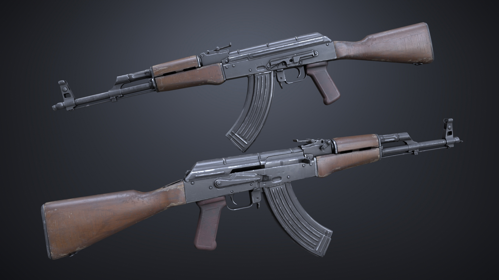
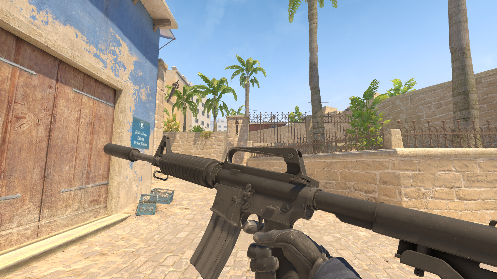
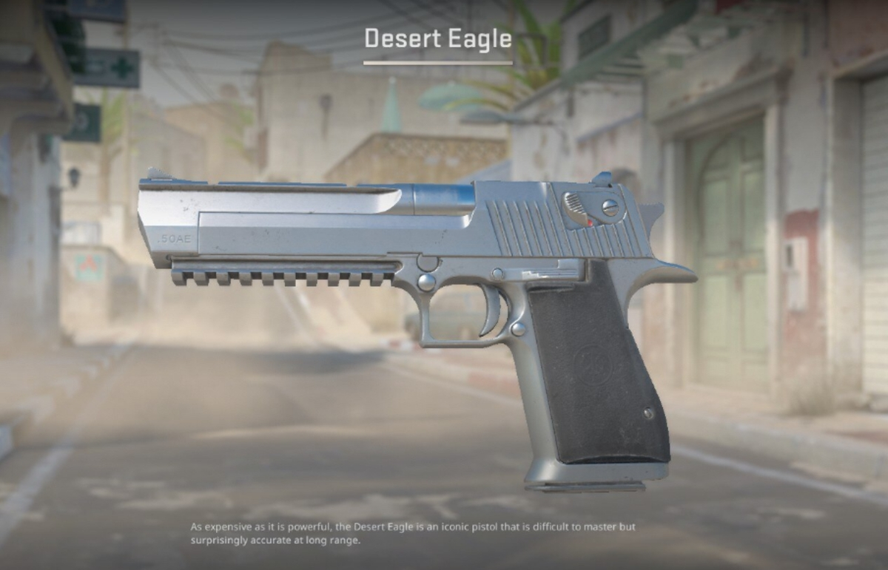
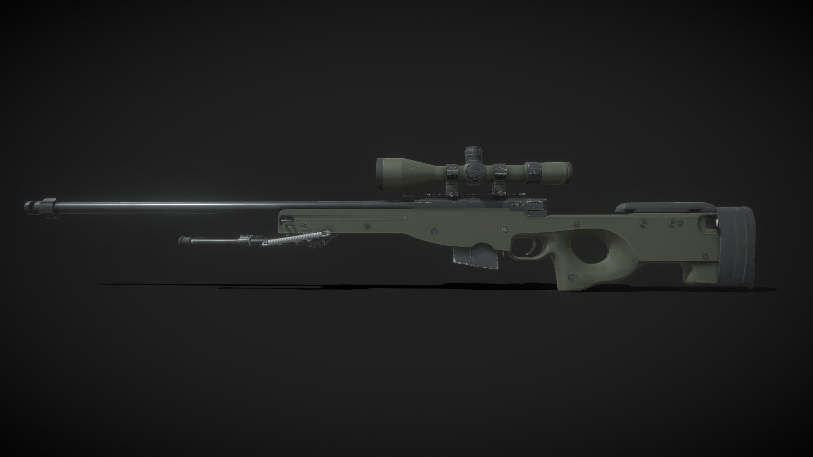
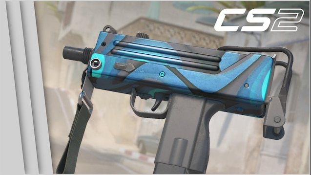
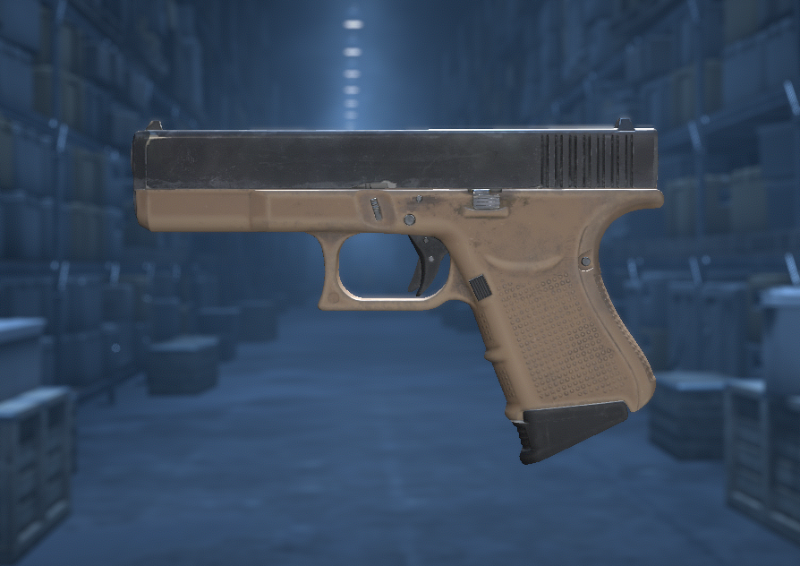

Armas do CS2

AK-47
Rifle de alta potência, ideal para confrontos de longo alcance.
- Dano: 111 (cabeça)
- Preço: $2700
- Categoria: Rifle

M4A1-S
Rifle silencioso com excelente precisão. Ideal para CTs.
- Dano: 88 (cabeça)
- Preço: $3100
- Categoria: Rifle

Desert Eagle
Pistola de alto dano, boa para eliminação de inimigos em uma bala.
- Dano: 150 (cabeça)
- Preço: $700
- Categoria: Pistola

AWP
A AWP (Arctic Warfare Police) é uma das rifles de sniper mais poderosas do jogo, capaz de eliminar um inimigo com um único tiro na cabeça.
- Dano: 450 (cabeça) 101 (corpo)
- Preço: $4.750
- Categoria: Sniper

MAC-10
A MAC-10 é uma submetralhadora leve e de baixo custo, ideal para situações de combate rápido e agressivo.
- Dano: 27 (cabeça)
- Preço: $1.050
- Categoria: Submetralhadora

Glock-18
A Glock-18 é a pistola padrão dos Terroristas (T), oferecendo uma opção barata e eficaz no início de cada rodada.
- Dano: 40 (cabeça)
- Preço: $500
- Categoria: Pistola